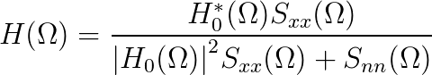
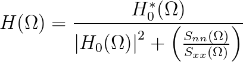
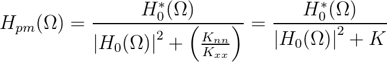

The application of Equation 10.29—repeated below—
requires a lot of prior knowledge.
(10.36)

We need to know H0(Ω), Sxx(Ω),
and Snn(Ω). There are ways to measure the transfer
function of the distortion filter H0(Ω). But what
about the power spectral densities of the signal and the noise?
In this exercise we suggest a “poor man’s Wiener filter”. It is based
upon a rewritten form of the Wiener filter
Equation 10.30 that is given below.
(10.37)

We have frequently assumed that the noise process is white noise, that the
power spectral density is flat. This means that Snn(Ω)
= Knn. This is only a small leap of faith.
What physical constraint stands in the way of this assumption being
valid in our real, physical world?
Let us now take a much bigger leap. Let us assume that as we do not know the
actual signal—if we did why would we try to restore it?—the power
spectral density of the signal is also flat, Sxx(Ω) =
Kxx. Our ignorance of the actual form of
Sxx(Ω) gives us no basis to assume that any
particular frequency band is greater than any other. This means that the
“poor man’s Wiener filter”, Hpm(Ω), is given by:
(10.38)

We have replaced the ratio of two constants
Knn/Kxx
with the single constant K. The only thing that is now missing is
the value of K.
In the experiments below, choose the radius of the aperture (starting from
the smallest), different levels of additive, independent, Gaussian noise,
and different values of K. As before, the magnitude of the spectrum
of the aperture filter will be displayed as well as the SNR and you
can rotate the display of the spectrum.
At the highest value of the SNR and the smallest radius, what
range of values for K leads to restorations that are comparable
to the original.
Now change the SNR to 10:1 and adjust K to produce
(in your estimation) the best possible restoration. Which version
resembles the original version most: the noisy and distorted version (lower, left panel) or the restored version you have produced by
adjusting K (lower, right panel)?
Repeat the previous experiment while systematically decreasing the
SNR from its highest value and looking for the value of K
that yields the best restoration. As the SNR decreases which
version resembles the original version most: the noisy and distorted
version (lower, left panel) or the restored version (lower, right
panel)?
Does there seem to be a relationship between the choice of K
and the SNR? Is there an explanation possible based upon the
above
equation?
Now repeat the above experiments for various values of the aperture radius.
For each aperture size, at what SNR is the filter
not useful in restoring the image? You might also consider
making a distinction between “recognizing an image” and “restoring
an image”.